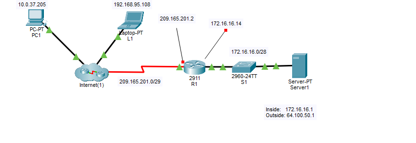
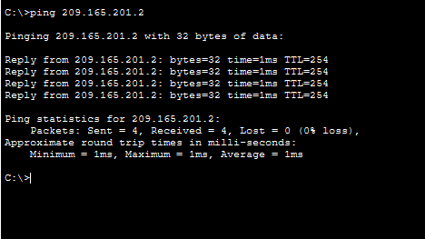
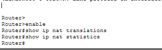
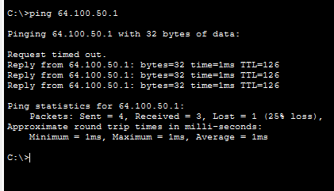
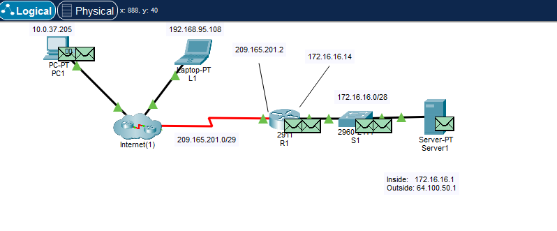

1. Topología de red
Se diseña una topología compuesta por una red externa simulada (Internet), un router Cisco 2911, un switch de acceso y un servidor interno en red privada 172.16.16.0/28.
Topología inicial del ejercicio.
2. Verificación inicial (sin NAT)
Se comprueba que desde la red externa no es posible acceder directamente a la IP privada del servidor (172.16.16.1), ya que las direcciones privadas no son enroutables en Internet.

Ping fallando hacia la red privada.
Se verifica que sí existe conectividad hasta la interfaz pública del router (209.165.201.2).
Ping correcto hacia el router.
3. Estado NAT antes de configuración
Antes de aplicar NAT, se comprueba que no existen traducciones activas en el router mediante:
show ip nat translations
Tabla NAT vacía.
4. Configuración DNAT Estático
Se configura una traducción estática que asocia la IP privada del servidor con una IP pública accesible desde Internet:
ip nat inside source static 172.16.16.1 64.100.50.1
Posteriormente se define qué interfaces actúan como inside y outside:
interface g0/0
ip nat inside
interface s0/0/0
ip nat outside
Configuración NAT aplicada correctamente.
5. Verificación funcionamiento NAT
Tras la configuración, el acceso a la IP pública 64.100.50.1 redirige correctamente al servidor interno.
Ping a la IP pública funcionando.

Tabla NAT mostrando traducción activa.
6. Análisis en modo Simulation
En modo Simulation se observa el proceso de traducción:
- El paquete llega al router con destino 64.100.50.1.
- El router modifica la cabecera IP (DNAT).
- El paquete sale con destino 172.16.16.1 hacia el servidor interno.
Traducción de IP en el router (antes y después de NAT).
Topología final completamente operativa.
Conclusión Técnica
La práctica demuestra el funcionamiento del DNAT estático en routers Cisco, permitiendo publicar un servicio interno mediante la asignación de una IP pública fija. Este mecanismo es fundamental en entornos empresariales para la exposición controlada de servidores web, correo o aplicaciones internas.
Se ha verificado el proceso completo mediante análisis de la tabla NAT y observación del tráfico en modo Simulation, confirmando la modificación de la cabecera IP en capa 3 del modelo OSI.